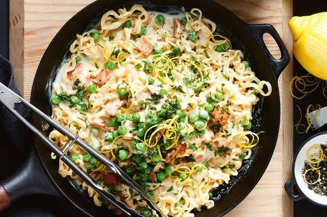

2 Minute Noodles Recipe:

This dish will bring a delightful taste of different ingrediants coming together to provide a warming sensation:
Ingrediants:
- 1 tbsp extra virgin olive oil
- 20g butter
- 1 brown onion, finely chopped
- 4 middle bacon rashers, trimmed, roughly chopped
- 4 x 72g packets Maggi 2 Minute Noodles Chicken Flavour
- 1 tablespoon plain flour
- 1 cup grated Devondale Colby cheese block
- 2 cups milk
- 1 cup frozen peas
- 1/4 cup fresh flat-leaf parsley leaves, chopped
- 1 tsp lemon zest
Steps:
- Heat oil and butter in a large, deep frying pan over medium-high heat. Add onion and bacon. Cook, stirring occasionally, for 5 minutes or until onion softens. Transfer 2 tablespoons onion mixture to a small bowl. Cover to keep warm.
- Add flour and 2 of the chicken flavour sachets from noodles to pan (discard remaining flavour sachets). Cook, stirring, for 1 minute. Reduce heat to medium. Gradually stir in milk and 2 cups water. Bring to a simmer. Add noodles. Cook, stirring occasionally to break up noodles, for 2 minutes or until noodles are tender.
- Add peas and cheese. Cook for a further 1 to 2 minutes or until peas are bright green and tender. Add parsley and lemon zest to reserved onion mixture. Season with salt and pepper. Toss to combine.
- Remove noodles from heat. Sprinkle with onion mixture. Serve.